机器学习中的数学(5)-强大的矩阵奇异值分解(SVD)及其应用
版权声明：
本文由LeftNotEasy发布于http://leftnoteasy.cnblogs.com, 本文可以被全部的转载或者部分使用，但请注明出处，如果有问题，请联系wheeleast@gmail.com
前言：
上一次写了关于PCA与LDA的文章，PCA的实现一般有两种，一种是用特征值分解去实现的，一种是用奇异值分解去实现的。在上篇文章中便是基于特征值分解的一种解释。特征值和奇异值在大部分人的印象中，往往是停留在纯粹的数学计算中。而且线性代数或者矩阵论里面，也很少讲任何跟特征值与奇异值有关的应用背景。奇异值分解是一个有着很明显的物理意义的一种方法，它可以将一个比较复杂的矩阵用更小更简单的几个子矩阵的相乘来表示，这些小矩阵描述的是矩阵的重要的特性。就像是描述一个人一样，给别人描述说这个人长得浓眉大眼，方脸，络腮胡，而且带个黑框的眼镜，这样寥寥的几个特征，就让别人脑海里面就有一个较为清楚的认识，实际上，人脸上的特征是有着无数种的，之所以能这么描述，是因为人天生就有着非常好的抽取重要特征的能力，让机器学会抽取重要的特征，SVD是一个重要的方法。
在机器学习领域，有相当多的应用与奇异值都可以扯上关系，比如做feature reduction的PCA，做数据压缩（以图像压缩为代表）的算法，还有做搜索引擎语义层次检索的LSI（Latent Semantic Indexing）
另外在这里抱怨一下，之前在百度里面搜索过SVD，出来的结果都是俄罗斯的一种狙击枪（AK47同时代的），是因为穿越火线这个游戏里面有一把狙击枪叫做SVD，而在Google上面搜索的时候，出来的都是奇异值分解（英文资料为主）。想玩玩战争游戏，玩玩COD不是非常好吗，玩山寨的CS有神马意思啊。国内的网页中的话语权也被这些没有太多营养的帖子所占据。真心希望国内的气氛能够更浓一点，搞游戏的人真正是喜欢制作游戏，搞Data Mining的人是真正喜欢挖数据的，都不是仅仅为了混口饭吃，这样谈超越别人才有意义，中文文章中，能踏踏实实谈谈技术的太少了，改变这个状况，从我自己做起吧。
前面说了这么多，本文主要关注奇异值的一些特性，另外还会稍稍提及奇异值的计算，不过本文不准备在如何计算奇异值上展开太多。另外，本文里面有部分不算太深的线性代数的知识，如果完全忘记了线性代数，看本文可能会有些困难。
一、奇异值与特征值基础知识：
特征值分解和奇异值分解在机器学习领域都是属于满地可见的方法。两者有着很紧密的关系，我在接下来会谈到，特征值分解和奇异值分解的目的都是一样，就是提取出一个矩阵最重要的特征。先谈谈特征值分解吧：
1）特征值：
如果说一个向量v是方阵A的特征向量，将一定可以表示成下面的形式：
这时候λ就被称为特征向量v对应的特征值，一个矩阵的一组特征向量是一组正交向量。特征值分解是将一个矩阵分解成下面的形式：
其中Q是这个矩阵A的特征向量组成的矩阵，Σ是一个对角阵，每一个对角线上的元素就是一个特征值。我这里引用了一些参考文献中的内容来说明一下。首先，要明确的是，一个矩阵其实就是一个线性变换，因为一个矩阵乘以一个向量后得到的向量，其实就相当于将这个向量进行了线性变换。比如说下面的一个矩阵：
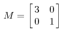 它其实对应的线性变换是下面的形式：
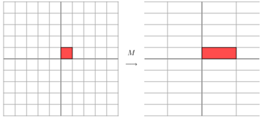 因为这个矩阵M乘以一个向量(x,y)的结果是：
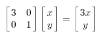 上面的矩阵是对称的，所以这个变换是一个对x，y轴的方向一个拉伸变换（每一个对角线上的元素将会对一个维度进行拉伸变换，当值>1时，是拉长，当值<1时时缩短），当矩阵不是对称的时候，假如说矩阵是下面的样子：
它所描述的变换是下面的样子：
这其实是在平面上对一个轴进行的拉伸变换（如蓝色的箭头所示），在图中，蓝色的箭头是一个最主要的变化方向（变化方向可能有不止一个），如果我们想要描述好一个变换，那我们就描述好这个变换主要的变化方向就好了。反过头来看看之前特征值分解的式子，分解得到的Σ矩阵是一个对角阵，里面的特征值是由大到小排列的，这些特征值所对应的特征向量就是描述这个矩阵变化方向（从主要的变化到次要的变化排列）
当矩阵是高维的情况下，那么这个矩阵就是高维空间下的一个线性变换，这个线性变化可能没法通过图片来表示，但是可以想象，这个变换也同样有很多的变换方向，我们通过特征值分解得到的前N个特征向量，那么就对应了这个矩阵最主要的N个变化方向。我们利用这前N个变化方向，就可以近似这个矩阵（变换）。也就是之前说的：提取这个矩阵最重要的特征。总结一下，特征值分解可以得到特征值与特征向量，特征值表示的是这个特征到底有多重要，而特征向量表示这个特征是什么，可以将每一个特征向量理解为一个线性的子空间，我们可以利用这些线性的子空间干很多的事情。不过，特征值分解也有很多的局限，比如说变换的矩阵必须是方阵。
（说了这么多特征值变换，不知道有没有说清楚，请各位多提提意见。）
2）奇异值：
下面谈谈奇异值分解。特征值分解是一个提取矩阵特征很不错的方法，但是它只是对方阵而言的，在现实的世界中，我们看到的大部分矩阵都不是方阵，比如说有N个学生，每个学生有M科成绩，这样形成的一个N * M的矩阵就不可能是方阵，我们怎样才能描述这样普通的矩阵呢的重要特征呢？奇异值分解可以用来干这个事情，奇异值分解是一个能适用于任意的矩阵的一种分解的方法：
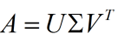 假设A是一个N * M的矩阵，那么得到的U是一个N * N的方阵（里面的向量是正交的，U里面的向量称为左奇异向量），Σ是一个N * M的矩阵（除了对角线的元素都是0，对角线上的元素称为奇异值），V’(V的转置)是一个N * N的矩阵，里面的向量也是正交的，V里面的向量称为右奇异向量），从图片来反映几个相乘的矩阵的大小可得下面的图片

那么奇异值和特征值是怎么对应起来的呢？首先，我们将一个矩阵A的转置 * A，将会得到一个方阵，我们用这个方阵求特征值可以得到：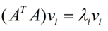 这里得到的v，就是我们上面的右奇异向量。此外我们还可以得到：
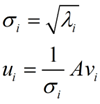 这里的σ就是上面说的奇异值，u就是上面说的左奇异向量。奇异值σ跟特征值类似，在矩阵Σ中也是从大到小排列，而且σ的减少特别的快，在很多情况下，前10%甚至1%的奇异值的和就占了全部的奇异值之和的99%以上了。也就是说，我们也可以用前r大的奇异值来近似描述矩阵，这里定义一下部分奇异值分解：
r是一个远小于m、n的数，这样矩阵的乘法看起来像是下面的样子：
右边的三个矩阵相乘的结果将会是一个接近于A的矩阵，在这儿，r越接近于n，则相乘的结果越接近于A。而这三个矩阵的面积之和（在存储观点来说，矩阵面积越小，存储量就越小）要远远小于原始的矩阵A，我们如果想要压缩空间来表示原矩阵A，我们存下这里的三个矩阵：U、Σ、V就好了。
二、奇异值的计算：
奇异值的计算是一个难题，是一个O(N^3)的算法。在单机的情况下当然是没问题的，matlab在一秒钟内就可以算出1000 * 1000的矩阵的所有奇异值，但是当矩阵的规模增长的时候，计算的复杂度呈3次方增长，就需要并行计算参与了。Google的吴军老师在数学之美系列谈到SVD的时候，说起Google实现了SVD的并行化算法，说这是对人类的一个贡献，但是也没有给出具体的计算规模，也没有给出太多有价值的信息。
其实SVD还是可以用并行的方式去实现的，在解大规模的矩阵的时候，一般使用迭代的方法，当矩阵的规模很大（比如说上亿）的时候，迭代的次数也可能会上亿次，如果使用Map-Reduce框架去解，则每次Map-Reduce完成的时候，都会涉及到写文件、读文件的操作。个人猜测Google云计算体系中除了Map-Reduce以外应该还有类似于MPI的计算模型，也就是节点之间是保持通信，数据是常驻在内存中的，这种计算模型比Map-Reduce在解决迭代次数非常多的时候，要快了很多倍。
Lanczos迭代就是一种解对称方阵部分特征值的方法（之前谈到了，解A’* A得到的对称方阵的特征值就是解A的右奇异向量），是将一个对称的方程化为一个三对角矩阵再进行求解。按网上的一些文献来看，Google应该是用这种方法去做的奇异值分解的。请见Wikipedia上面的一些引用的论文，如果理解了那些论文，也“几乎”可以做出一个SVD了。
由于奇异值的计算是一个很枯燥，纯数学的过程，而且前人的研究成果（论文中）几乎已经把整个程序的流程图给出来了。更多的关于奇异值计算的部分，将在后面的参考文献中给出，这里不再深入，我还是focus在奇异值的应用中去。
三、奇异值与主成分分析（PCA）：
主成分分析在上一节里面也讲了一些，这里主要谈谈如何用SVD去解PCA的问题。PCA的问题其实是一个基的变换，使得变换后的数据有着最大的方差。方差的大小描述的是一个变量的信息量，我们在讲一个东西的稳定性的时候，往往说要减小方差，如果一个模型的方差很大，那就说明模型不稳定了。但是对于我们用于机器学习的数据（主要是训练数据），方差大才有意义，不然输入的数据都是同一个点，那方差就为0了，这样输入的多个数据就等同于一个数据了。以下面这张图为例子：
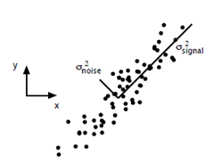 这个假设是一个摄像机采集一个物体运动得到的图片，上面的点表示物体运动的位置，假如我们想要用一条直线去拟合这些点，那我们会选择什么方向的线呢？当然是图上标有signal的那条线。如果我们把这些点单纯的投影到x轴或者y轴上，最后在x轴与y轴上得到的方差是相似的（因为这些点的趋势是在45度左右的方向，所以投影到x轴或者y轴上都是类似的），如果我们使用原来的xy坐标系去看这些点，容易看不出来这些点真正的方向是什么。但是如果我们进行坐标系的变化，横轴变成了signal的方向，纵轴变成了noise的方向，则就很容易发现什么方向的方差大，什么方向的方差小了。
一般来说，方差大的方向是信号的方向，方差小的方向是噪声的方向，我们在数据挖掘中或者数字信号处理中，往往要提高信号与噪声的比例，也就是信噪比。对上图来说，如果我们只保留signal方向的数据，也可以对原数据进行不错的近似了。
PCA的全部工作简单点说，就是对原始的空间中顺序地找一组相互正交的坐标轴，第一个轴是使得方差最大的，第二个轴是在与第一个轴正交的平面中使得方差最大的，第三个轴是在与第1、2个轴正交的平面中方差最大的，这样假设在N维空间中，我们可以找到N个这样的坐标轴，我们取前r个去近似这个空间，这样就从一个N维的空间压缩到r维的空间了，但是我们选择的r个坐标轴能够使得空间的压缩使得数据的损失最小。
还是假设我们矩阵每一行表示一个样本，每一列表示一个feature，用矩阵的语言来表示，将一个m * n的矩阵A的进行坐标轴的变化，P就是一个变换的矩阵从一个N维的空间变换到另一个N维的空间，在空间中就会进行一些类似于旋转、拉伸的变化。
而将一个m * n的矩阵A变换成一个m * r的矩阵，这样就会使得本来有n个feature的，变成了有r个feature了（r < n)，这r个其实就是对n个feature的一种提炼，我们就把这个称为feature的压缩。用数学语言表示就是：
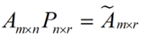 但是这个怎么和SVD扯上关系呢？之前谈到，SVD得出的奇异向量也是从奇异值由大到小排列的，按PCA的观点来看，就是方差最大的坐标轴就是第一个奇异向量，方差次大的坐标轴就是第二个奇异向量…我们回忆一下之前得到的SVD式子：
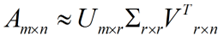 在矩阵的两边同时乘上一个矩阵V，由于V是一个正交的矩阵，所以V转置乘以V得到单位阵I，所以可以化成后面的式子
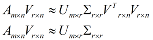 将后面的式子与A * P那个m * n的矩阵变换为m * r的矩阵的式子对照看看，在这里，其实V就是P，也就是一个变化的向量。这里是将一个m * n 的矩阵压缩到一个m * r的矩阵，也就是对列进行压缩，如果我们想对行进行压缩（在PCA的观点下，对行进行压缩可以理解为，将一些相似的sample合并在一起，或者将一些没有太大价值的sample去掉）怎么办呢？同样我们写出一个通用的行压缩例子：
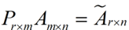 这样就从一个m行的矩阵压缩到一个r行的矩阵了，对SVD来说也是一样的，我们对SVD分解的式子两边乘以U的转置U'
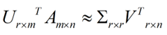 这样我们就得到了对行进行压缩的式子。可以看出，其实PCA几乎可以说是对SVD的一个包装，如果我们实现了SVD，那也就实现了PCA了，而且更好的地方是，有了SVD，我们就可以得到两个方向的PCA，如果我们对A’A进行特征值的分解，只能得到一个方向的PCA。
四、奇异值与潜在语义索引LSI：
潜在语义索引（Latent Semantic Indexing）与PCA不太一样，至少不是实现了SVD就可以直接用的，不过LSI也是一个严重依赖于SVD的算法，之前吴军老师在矩阵计算与文本处理中的分类问题中谈到：
“三个矩阵有非常清楚的物理含义。第一个矩阵X中的每一行表示意思相关的一类词，其中的每个非零元素表示这类词中每个词的重要性（或者说相关性），数值越大越相关。最后一个矩阵Y中的每一列表示同一主题一类文章，其中每个元素表示这类文章中每篇文章的相关性。中间的矩阵则表示类词和文章雷之间的相关性。因此，我们只要对关联矩阵A进行一次奇异值分解，w 我们就可以同时完成了近义词分类和文章的分类。（同时得到每类文章和每类词的相关性）。”
上面这段话可能不太容易理解，不过这就是LSI的精髓内容，我下面举一个例子来说明一下，下面的例子来自LSA tutorial，具体的网址我将在最后的引用中给出：
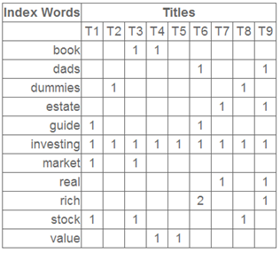 这就是一个矩阵，不过不太一样的是，这里的一行表示一个词在哪些title中出现了（一行就是之前说的一维feature），一列表示一个title中有哪些词，（这个矩阵其实是我们之前说的那种一行是一个sample的形式的一种转置，这个会使得我们的左右奇异向量的意义产生变化，但是不会影响我们计算的过程）。比如说T1这个title中就有guide、investing、market、stock四个词，各出现了一次，我们将这个矩阵进行SVD，得到下面的矩阵：
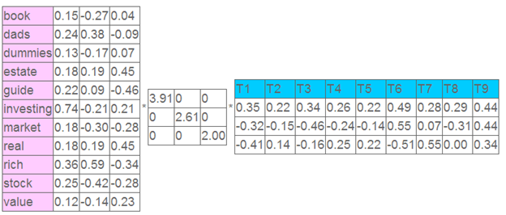 左奇异向量表示词的一些特性，右奇异向量表示文档的一些特性，中间的奇异值矩阵表示左奇异向量的一行与右奇异向量的一列的重要程序，数字越大越重要。
继续看这个矩阵还可以发现一些有意思的东西，首先，左奇异向量的第一列表示每一个词的出现频繁程度，虽然不是线性的，但是可以认为是一个大概的描述，比如book是0.15对应文档中出现的2次，investing是0.74对应了文档中出现了9次，rich是0.36对应文档中出现了3次；
其次，右奇异向量中一的第一行表示每一篇文档中的出现词的个数的近似，比如说，T6是0.49，出现了5个词，T2是0.22，出现了2个词。
然后我们反过头来看，我们可以将左奇异向量和右奇异向量都取后2维（之前是3维的矩阵），投影到一个平面上，可以得到：
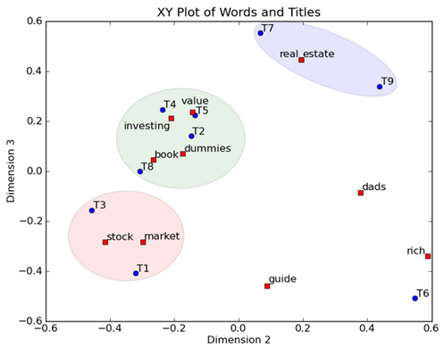 在图上，每一个红色的点，都表示一个词，每一个蓝色的点，都表示一篇文档，这样我们可以对这些词和文档进行聚类，比如说stock 和 market可以放在一类，因为他们老是出现在一起，real和estate可以放在一类，dads，guide这种词就看起来有点孤立了，我们就不对他们进行合并了。按这样聚类出现的效果，可以提取文档集合中的近义词，这样当用户检索文档的时候，是用语义级别（近义词集合）去检索了，而不是之前的词的级别。这样一减少我们的检索、存储量，因为这样压缩的文档集合和PCA是异曲同工的，二可以提高我们的用户体验，用户输入一个词，我们可以在这个词的近义词的集合中去找，这是传统的索引无法做到的。
不知道按这样描述，再看看吴军老师的文章，是不是对SVD更清楚了？:-D
参考资料：
1）A Tutorial on Principal Component Analysis, Jonathon Shlens
这是我关于用SVD去做PCA的主要参考资料
2）http://www.ams.org/samplings/feature-column/fcarc-svd
关于svd的一篇概念好文，我开头的几个图就是从这儿截取的
3）http://www.puffinwarellc.com/index.php/news-and-articles/articles/30-singular-value-decomposition-tutorial.html
另一篇关于svd的入门好文
4）http://www.puffinwarellc.com/index.php/news-and-articles/articles/33-latent-semantic-analysis-tutorial.html
svd与LSI的好文，我后面LSI中例子就是来自此
5）http://www.miislita.com/information-retrieval-tutorial/svd-lsi-tutorial-1-understanding.html
另一篇svd与LSI的文章，也还是不错，深一点，也比较长
6）Singular Value Decomposition and Principal Component Analysis, Rasmus Elsborg Madsen, Lars Kai Hansen and Ole Winther, 2004
跟1）里面的文章比较类似
及其应用_files/wechat.png)
posted on 2011-01-19 22:27 LeftNotEasy 阅读(145311) 评论(60) 编辑 收藏
及其应用_files/xml.gif)
{kind=link}
{kind=link}
{kind=link}
{kind=link}
{kind=link}
{kind=link}
{kind=link}
{kind=link}
{kind=link}
{kind=link}
{kind=link}
{kind=link}
{kind=link}
{kind=link}
{kind=link}
{kind=link}
{kind=link}
{kind=link}
{kind=link}
{kind=link}
{kind=link}
{kind=link}